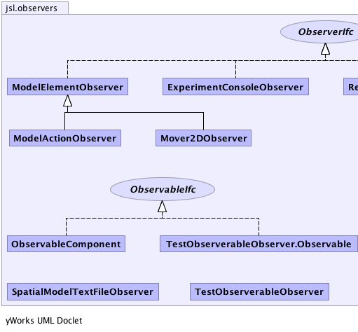
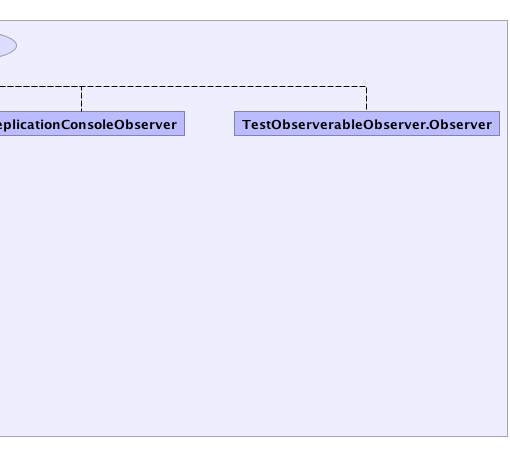

|
||||||||||
| PREV PACKAGE NEXT PACKAGE | FRAMES NO FRAMES | |||||||||
| Interface Summary | |
|---|---|
| ObservableIfc | The Java Observer/Observable implementation has a number of flaws. |
| ObserverIfc | The Java implementation of the observer/observable pattern has a number of flaws. |
| Class Summary | |
|---|---|
| ExperimentConsoleObserver | |
| ModelActionObserver | |
| ModelElementObserver | |
| Mover2DObserver | |
| ObservableComponent | The Java observer/observable pattern has a number of flaws. |
| ReplicationConsoleObserver | |
| SpatialModelTextFileObserver | |
| TestObserverableObserver | |
|  |  |
|
||||||||||
| PREV PACKAGE NEXT PACKAGE | FRAMES NO FRAMES | |||||||||